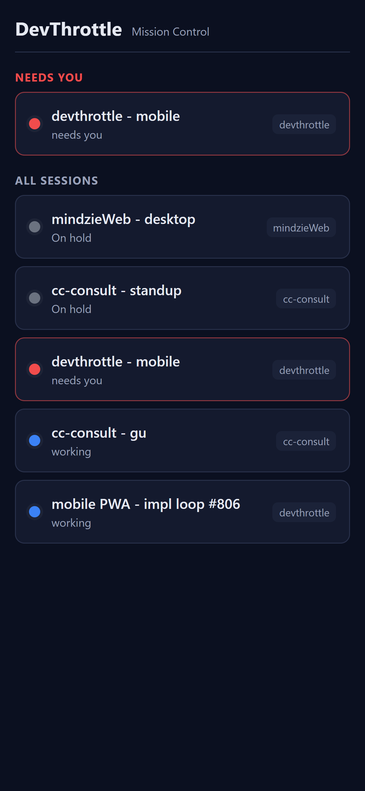
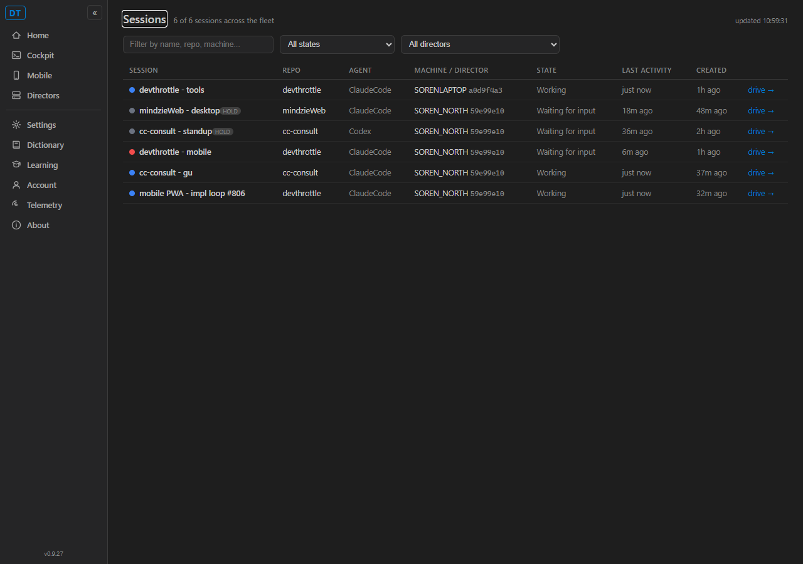
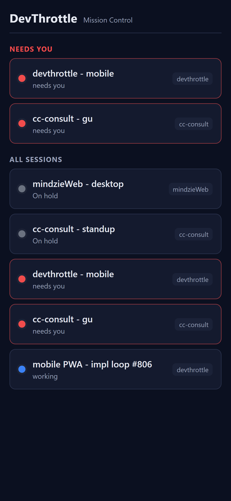
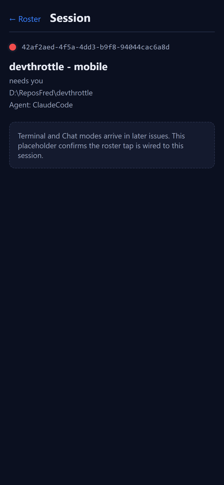

Developer Agent proof report. Branch issue-806-mobile-foundation.
Repo thefrederiksen/devthrottle. This is Issue 1 (foundation) of the mobile app plan
(docs/architecture/mobile/IMPLEMENTATION.md).
mobile/ project at the repo root: Vite + React + TypeScript +
vite-plugin-pwa. Outside the C# src/ tree (not in the .NET solution).BuildMobileApp) on
CcDirector.Gateway.csproj that runs npm ci && npm run build and stages
mobile/dist/** into the Gateway's wwwroot/m/. Gated by
RunMobileBuild (Release / publish or explicit -p:BuildMobile=true), so a
routine Debug dotnet build never runs npm./m as static files with the per-machine token injected
into index.html (the /voice __GATEWAY_TOKEN__ pattern); a single
catch-all handler also does SPA deep-link fallback. The shell is exempt from the global auth gate
(it carries no secret), so it loads with auth on or off./openapi/v1.json (AddOpenApi /
MapOpenApi); /sessions annotated .Produces<List<SessionDto>>.
openapi-typescript generates the typed client into mobile/src/api/schema.ts./sessions aggregator and a faithful TypeScript port of the C#
SessionOrdering triage. Tapping a row opens a session-detail placeholder bound to the id.User-Agent browser-navigation
(Accept: text/html), not already under /m, gets a 302 to /m/;
a desktop UA falls through to the Cockpit unchanged./sessions so a cold offline open renders the last-known roster.PASS dotnet build cc-director.sln (Debug) succeeds, 0 warnings, 0 errors.
A routine Debug build does NOT invoke npm. The Gateway test project: 989 passed, 1
pre-existing failure (DictationEndpointTests.DictatePage_is_served) unrelated to this issue -
see the note below.
DictationEndpointTests.DictatePage_is_served
asserts the ControlApi dictate.html contains "CC Director - Dictation", but the most recent
commit on main (0e6febed, "rename product user interface text to the Director and DevThrottle
brand hierarchy") renamed that title to "Director - Dictation". This issue touches no ControlApi or
dictation file; the test is red on main independent of #806 and is out of scope here.
| # | Criterion | Result | Proof |
|---|---|---|---|
| 1 | mobile/ Vite+React+TS+vite-plugin-pwa; npm ci && npm run build produces a dist/ | PASS | ac1-mobile-build.txt |
| 2 | Routine dotnet build does NOT invoke npm (target skipped outside release) | PASS | ac2-debug-skips-npm.txt (RunMobileBuild=false, 0 npm invocations) |
| 3 | Release build runs the web build; wwwroot/m/ has the built index.html + hashed assets | PASS | ac3-release-wwwroot.txt |
| 4 | Phone-viewport /m/ renders the Home roster: "needs you" group above the full list, each row name + status dot + context line, matching live /sessions | PASS | ac4-phone-roster.png beside ac4-desktop-cockpit-roster.png |
| 5 | Loads data through the generated typed client with the injected Bearer; renders with Gateway auth on or off | PASS | ac5-bearer-auth.txt (in-app fetch 200 with Bearer; auth-on integration tests) |
| 6 | Phone UA -> 302 /m/; desktop UA -> Cockpit (no redirect) | PASS | ac6-redirect.txt |
| 7 | Installable; after one load, opens offline with the last-known roster | PASS | ac7-offline-shell.png (Gateway stopped; SW cache renders the roster) |
| 8 | Tapping a row navigates to a session-detail placeholder bound to that session id | PASS | ac8-session-detail.png (URL /m/session/<id>) |




The Release Gateway dev-console host was run from the worktree on a non-default port
(--port 7906) with CC_GATEWAY_NO_TAILSCALE=1 so it never touches the production
Tailscale Serve front door, discovering the live fleet for real /sessions data.
Phone-viewport screenshots were captured at 390x844 (deviceScaleFactor 3) via CDP device-metrics override.
Affected container: CcDirector.Gateway (new static serving at /m, token-injected
index.html, OpenAPI document, mobile-redirect middleware, release-gated MSBuild web-build target) plus the
new repo-root mobile/ project (not a .NET container). No security posture change: the
/m shell carries no secret and the data endpoints stay token-gated (the injected Bearer is the
credential). No new egress, no new persisted data. No architecture/security drift requiring a
docs/cencon/ manifest change beyond this proof.
I believe this is finished. Every acceptance criterion is met and proven on a running Gateway with committed proof. The build is clean and npm-free for routine Debug builds. The one failing Gateway test is a pre-existing rebrand staleness unrelated to this issue.